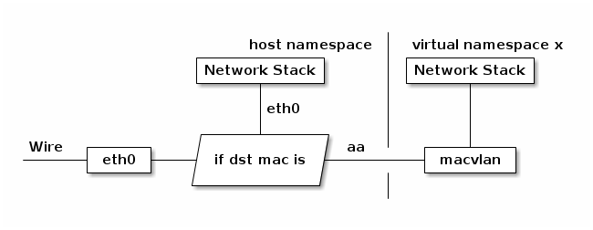
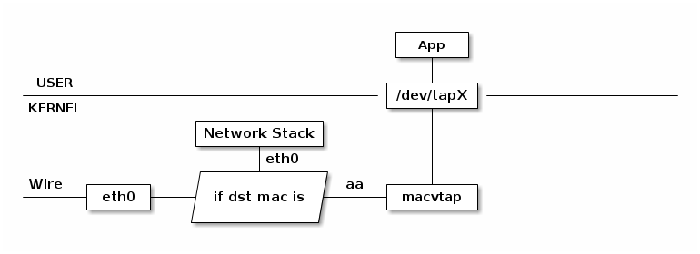
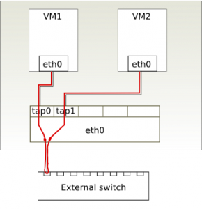

TUN/TAP
Physical NIC network stack
TUN dervice
Simulate an UDP VPN process.

TAP dervice
Like TUN device, here is a list of the main differences between tun and tap.
- /dev/tunX works on IP layer (ip_forward)
- /dev/tapX work on MAC layer (bridge, MAC broadcast)
MacVLAN/MacVTap
MacVLan
Macvlan working mode
Macvlan work with namespace
MacVTap
Use /dev/tapX instead of network stack.
MacVLan and MacVTap are both working on MAC layer.
MacVLan/MacVTap working mode
Both macvlan and macvtap can be in one of four modes, defining the communication between macvtap endpoints on a single lower device:
Virtual Ethernet Port Aggregator (VEPA), the default mode: data from one endpoint to another endpoint on the same lower device gets sent down the lower device to external switch. If that switch supports the hairpin mode, the frames get sent back to the lower device and from there to the destination endpoint.
Most switches today do not support hairpin mode, so the two endpoints are not able to exchange ethernet frames, although they might still be able to communicate using an tcp/ip router. A linux host used as the adjacent bridge can be put into hairpin mode by writing to /sys/class/net/dev/brif/port/hairpin_mode. This mode is particularly interesting if you want to manage the virtual machine networking at the switch level. A switch that is aware of the VEPA guests can enforce filtering and bandwidth limits per MAC address without the Linux host knowing about it.


- Bridge mode: this works almost like a traditional bridge, in that data received on a macvlan in bridge mode and destined for another macvlan of the same lower device is sent directly to the target (if the target macvlan is also in bridge mode), rather than being sent outside. This of course works well with non-hairpin switches, and inter-VM traffic has better performance than VEPA mode, since the external round-trip is avoided.

- Private mode: this is essentially like VEPA mode, but with the added feature that no macvlans on the same lower device can communicate, regardless of where the packets come from (so even if inter-VM traffic is sent back by a hairpin switch or an IP router, the target macvlan is prevented from receiving it). I haven't tried, but I suppose that it is the operating mode of the target macvlan that determines whether it receives the traffic or not. This mode is useful, of course, if we really want macvlan isolation.
- Passthru mode: this mode was added later, to work around some limitation of macvlans (more details here). I'm not 100% clear on what's the problem passthru mode tries to solve, as I was able to set promiscuous mode, create bridges, vlans and sub-macv{lan,tap} interfaces in KVM guests using a plain macvtap in VEPA mode for their networking (so no need for passthru). Since I'm surely missing something, more information (as usual) is welcome.
Setting up macvtap (or macvlan)
A macvtap interface is created an configured using the ip link command from iproute2, in the same way as we configure macvlan or veth interfaces.
Example:
$ sudo ip link add link eth0 name macvtap0 address 52:54:00:b8:9c:58 type macvtap mode bridge $ sudo ip link set macvtap0 up $ ip link show macvtap0
Qemu on macvtap
Qemu as of 0.12 does not have direct support for macvtap, so we have to (ab)use the tun/tap configuration interface. To start a guest on the interface from the above example, we need to pass the device node as an open file descriptor to qemu and tell it about the mac address. The scripts normally used for bridge configuration must be disabled. A bash redirect can be used to open the character device in read/write mode and pass it as file descriptor 3.
$ qemu -net nic,model=virtio,addr=1a:46:0b:ca:bc:7b -net tap,fd=3 3<>/dev/tap11
Demo: OpenvSwitch vs MacVTap
Define MacVTap network and Openvswitch in liabvirt
$ cat network.xml
<network>
<name>ovs-bridge-eth1</name>
<forward mode='bridge'/>
<bridge name='br1'/>
<virtualport type='openvswitch'>
<parameters interfaceid='bffd2747-4b84-44b5-bdf4-faede6e413c5'/>
</virtualport>
</network>
<network>
<name>macvtap-bridge-eth1</name>
<forward mode="bridge">
<interface dev="eth1"/>
</forward>
</network>
<network>
<name>macvtap-vepa-eth2</name>
<forward mode="vepa">
<interface dev="eth2"/>
</forward>
</network>
<network>
<name>macvtap-bridge-eth2</name>
<forward mode="bridge">
<interface dev="eth2"/>
</forward>
</network>
$ sudo virsh net-define network.xml
A part of libvirt XML definition of MacVTap
...
<devices>
<interface type='network'>
<mac address='52:54:00:0a:8a:c1'/>
<source network='ovs-bridge-eth1'/>
<model type='rtl8139'/>
<address type='pci' domain='0x0000' bus='0x00' slot='0x03' function='0x0' multifunction='on'/>
</interface>
<interface type='network'>
<mac address='52:54:00:0a:8a:c2'/>
<source network='macvtap-bridge-eth2'/>
<model type='rtl8139'/>
<address type='pci' domain='0x0000' bus='0x00' slot='0x03' function='0x1'/>
</interface>
...
</devices>
$ sudo virsh create VM0.xml
Connect host via macvlan
$ cat setmacvlan #! /bin/bash sudo ip link add link eth2 name vlan0 address 50:e5:49:45:76:db type macvlan mode bridge sudo ifconfig eth2 0.0.0.0 sudo ifconfig vlan0 172.16.100.101/24 $ cat delmacvlan #! /bin/bash sudo ifconfig vlan0 down sudo ifconfig eth2 172.16.100.101/24 sudo ip link del dev vlan0
OpenVSwitch hairping mode
$ cat hairpin-On.sh #! /bin/bash sudo ovs-ofctl add-flow brPrivate2 actions=all,in_port sudo ovs-ofctl dump-flows brPrivate2 $ cat hairpin-Off.sh #! /bin/bash sudo ovs-ofctl del-flows brPrivate2 sudo ovs-ofctl add-flow brPrivate2 priority=0,actions=normal sudo ovs-ofctl dump-flows brPrivate2
Trace libvirt commands
$ ps aux |grep kvm libvirt+ 4486 1.7 2.8 4676344 237544 ? Sl Jan19 12:32 qemu-system-x86_64 -enable-kvm -name VM2 -S -machine pc-i440fx-2.1,accel=kvm,usb=off -cpu qemu64 -m 2048 -realtime mlock=off -smp 1,sockets=1,cores=1,threads=1 -uuid 3adebedc-eb5c-4a26-96fe-5933861c4abd -no-user-config -nodefaults -chardev socket,id=charmonitor,path=/var/lib/libvirt/qemu/VM2.monitor,server,nowait -mon chardev=charmonitor,id=monitor,mode=control -rtc base=utc,driftfix=slew -global kvm-pit.lost_tick_policy=discard -no-hpet -no-shutdown -boot strict=on -device ich9-usb-ehci1,id=usb,bus=pci.0,addr=0x5.0x7 -device ich9-usb-uhci1,masterbus=usb.0,firstport=0,bus=pci.0,multifunction=on,addr=0x5 -device ich9-usb-uhci2,masterbus=usb.0,firstport=2,bus=pci.0,addr=0x5.0x1 -device ich9-usb-uhci3,masterbus=usb.0,firstport=4,bus=pci.0,addr=0x5.0x2 -device virtio-serial-pci,id=virtio-serial0,bus=pci.0,addr=0x6 -drive file=/home/cloud/libvirt/vm2.img,if=none,id=drive-virtio-disk0,format=raw,cache=none -device virtio-blk-pci,scsi=off,bus=pci.0,addr=0x7,drive=drive-virtio-disk0,id=virtio-disk0,bootindex=1 -netdev tap,fd=24,id=hostnet0 -device rtl8139,netdev=hostnet0,id=net0,mac=52:54:00:0a:8a:c5,bus=pci.0,multifunction=on,addr=0x3 -netdev tap,fd=27,id=hostnet1 -device rtl8139,netdev=hostnet1,id=net1,mac=52:54:00:0a:8a:c6,bus=pci.0,addr=0x3.0x1 -chardev pty,id=charserial0 -device isa-serial,chardev=charserial0,id=serial0 -chardev spicevmc,id=charchannel0,name=vdagent -device virtserialport,bus=virtio-serial0.0,nr=1,chardev=charchannel0,id=channel0,name=com.redhat.spice.0 -spice port=5902,addr=127.0.0.1,disable-ticketing,seamless-migration=on -device qxl-vga,id=video0,ram_size=67108864,vram_size=67108864,bus=pci.0,addr=0x2 -device intel-hda,id=sound0,bus=pci.0,addr=0x4 -device hda-duplex,id=sound0-codec0,bus=sound0.0,cad=0 -chardev spicevmc,id=charredir0,name=usbredir -device usb-redir,chardev=charredir0,id=redir0 -chardev spicevmc,id=charredir1,name=usbredir -device usb-redir,chardev=charredir1,id=redir1 -chardev spicevmc,id=charredir2,name=usbredir -device usb-redir,chardev=charredir2,id=redir2 -chardev spicevmc,id=charredir3,name=usbredir -device usb-redir,chardev=charredir3,id=redir3 -device virtio-balloon-pci,id=balloon0,bus=pci.0,addr=0x8 -msg timestamp=on
Performances measures
| MacVTap bridge; vepa | ovs | vde2 | host1 | host2 | |
|---|---|---|---|---|---|
| NIC | virtio+vhost | virtio+vhost | virtio | Intel Corporation 82574L | D-Link System Inc DGE-528T |
| internal | 8.54 Gbits/sec; n/a | 8.52 Gbits/sec | 647 Mbits/sec | n/a | n/a |
| external | 941 Mbits/sec; 940 Mbits/sec | 940 Mbits/sec | 932 Mbits/sec | 944 Mbits/sec | 944 Mbits/sec |
$ cat start-MacVTap0-AsDaemon
#! /bin/bash
MACaddr='52:54:00:b8:9c:58'
# Don't Edit, File automatically generated by Config-Kvm-vhoston script
if [ $EUID -ne 0 ]
then sudo echo "Super User passwd, please:"
if [ $? -ne 0 ]
then echo "Sorry, need su privilege!"
exit 1
fi
fi
sudo ip link add link eth0 name macvtap0 address ${MACaddr} type macvtap mode bridge
sleep 2
sudo ip link set dev macvtap0 up
TAPNUM=$(< /sys/class/net/macvtap0/ifindex)
sudo chmod 666 /dev/tap${TAPNUM}
vhostOn.sh
mkdir /src3/KVM/network-11586
echo "Starting VM: MacVTap0..., mem=${MEM}"
screen -S MacVTap0 -d -m run-MacVTap0-AsDaemon
$ cat run-MacVTap0-AsDaemon
#! /bin/bash
MEM=512M
MACaddr=$(< /sys/class/net/macvtap0/address)
TAPNUM=$(< /sys/class/net/macvtap0/ifindex)
qemu-system-x86_64 -name MacVTap0 -localtime -curses \
-m ${MEM} -enable-kvm \
-monitor unix:/src3/KVM/network-11586/MonSock,server,nowait \
-netdev tap,fd=3,id=hostnet0,vhost=on \
-net nic,vlan=0,netdev=hostnet0,macaddr=${MACaddr},model=virtio \
-drive index=0,media=disk,if=virtio,file=../img/MacVLan0.img 3<>/dev/tap${TAPNUM}
$ cat stop-MacVTap0-restore-lan
#! /bin/bash
# Don't Edit, File automatically generated by Config-Kvm-vhoston script
if [ $EUID -ne 0 ]
then sudo echo "Super User passwd, please:"
if [ $? -ne 0 ]
then echo "Sorry, need su privilege!"
exit 1
fi
fi
if [ -S /src3/KVM/network-11586/MonSock ]; then
echo "system_powerdown" | socat - unix-connect:/src3/KVM/network-11586/MonSock
echo "Please wait 10 seconds."
sleep 10
else
echo "Socket has been removed! Shutdown by ssh or resotre Lan only."
fi
ping -c 3 192.168.180.200
if [ $? -eq 0 ]; then
echo "MacVTap0 still alive, shut it down. Enter passwd twice!"
ssh -t jssu@192.168.180.200 'sudo init 0'
else
rm -rf /src3/KVM/network-11586
fi
echo "Restore lan..."
if [ -d /proc/sys/net/ipv4/conf/macvtap0 ]; then
sudo ip link set dev macvtap0 down
sudo ip link delete macvtap0
fi
User-mode Linux(UML) with MacVTap
$ cat startUML-MacVTap-AsDaemon
#! /bin/bash
MACaddr='50:e5:49:b8:9c:01'
#############################################################
IsThereTapDevice()
{
declare int i=0;
for devices in `find /sys/class/net -type l -name "vtap*"`
do
((i++));
done
if [ ${i} -gt 0 ]
then echo "Yes"
else echo "No"
fi
}
#############################################################
sudo echo Need SU passwd:
if [ `IsThereTapDevice` = "No" ]
then sudo iptables --flush
sudo iptables --table nat --flush
sudo iptables --delete-chain
sudo iptables --table nat --delete-chain
sudo iptables --table nat --append POSTROUTING --out-interface eth1 -j MASQUERADE
fi
#sudo tunctl -u jssu -t tap0
sudo ip link add link eth0 name vtap0 address ${MACaddr} type macvtap mode bridge
sleep 2
sudo ip link set dev vtap0 up
TAPNUM=$(< /sys/class/net/vtap0/ifindex)
sudo chmod 666 /dev/tap${TAPNUM}
sudo sysctl net.ipv4.ip_forward=1
#sudo arp -Ds 192.168.180.101 eth0 pub
sudo screen -S MacVTap -d -m linux.uml \
ubd0=DebJes-MacVTap.ext4 \
eth0=tuntap,tap${TAPNUM} \
mem=1024M \
con=pty con0=fd:0,fd:1 umid=MacVTap
sleep 30
sudo ifconfig tap${TAPNUM} 192.168.180.3 netmask 255.255.255.255 up
sudo sysctl net.ipv4.conf.tap${TAPNUM}.proxy_arp=1
sudo route add -host 192.168.180.101 dev tap${TAPNUM}
$ cat stop-uml-restore-lan-MacVTap
#############################################################
IsThereTapDevice()
{
declare int i=0;
for devices in `find /sys/class/net -type l -name "vtap*"`
do
((i++));
done
if [ ${i} -gt 0 ]
then echo "Yes"
else echo "No"
fi
}
#############################################################
sudo echo Need SU passwd:
sudo uml_mconsole MacVTap sysrq s
sudo uml_mconsole MacVTap sysrq u
sudo uml_mconsole MacVTap sysrq e
sudo uml_mconsole MacVTap halt
TAPNUM=$(< /sys/class/net/vtap0/ifindex)
sudo ifconfig tap${TAPNUM} 192.168.180.3 down
sudo sysctl net.ipv4.conf.tap${TAPNUM}.proxy_arp=0
sudo ip link set dev vtap0 down
sudo ip link delete vtap0
if [ `IsThereTapDevice` = "No" ]; then
sudo sysctl net.ipv4.ip_forward=0
sudo iptables --flush
sudo iptables --table nat --flush
sudo iptables --delete-chain
sudo iptables --table nat --delete-chain
fi
Known issues
- Use tap device rather than tun device.
- We can't configure the tap device until the VM booted on.
- Like uml-switch mode instead of bridge mode.
- Can not run in user mode.
TUNSETIFF failed, errno = 1 SIOCSIFFLAGS: Operation not permitted
- I have got the error message when transfer packets through VDE swtch.
uml_net_start_xmit: failed(-1)
User-mode Linux(UML) with OpenvSwitch MacVTap
$ cat startUML-OVS-MacVTap-AsDaemon
#! /bin/bash
MACaddr='50:e5:49:b8:9c:01'
sudo ip link add link brLAN name vtap0 address ${MACaddr} type macvtap mode bridge
sleep 2
sudo ip link set dev vtap0 up
TAPNUM=$(< /sys/class/net/vtap0/ifindex)
sudo chmod 666 /dev/tap${TAPNUM}
# sudo sysctl net.ipv4.ip_forward=1
# sudo arp -Ds 192.168.180.101 eth0 pub
sudo screen -S MacVTap -d -m linux.uml \
ubd0=DebJes-MacVTap.ext4 \
eth0=tuntap,tap${TAPNUM} mem=1024M \
con=pty con0=fd:0,fd:1 umid=MacVTap
sleep 30
sudo ovs-vsctl add-port brLAN tap${TAPNUM}
sudo ifconfig tap${TAPNUM} 0.0.0.0 up
$ cat stop-uml-restore-lan-OVS-MacVTap
#! /bin/bash
sudo echo Need SU passwd:
sudo uml_mconsole MacVTap sysrq s
sudo uml_mconsole MacVTap sysrq u
sudo uml_mconsole MacVTap sysrq e
sudo uml_mconsole MacVTap halt
TAPNUM=$(< /sys/class/net/vtap0/ifindex)
sudo ovs-vsctl del-port brLAN tap${TAPNUM}
sudo ip link set dev vtap0 down
sudo ip link delete vtap0
Known issues
- We couldn't configure the tap device until the VM booted on.
- Need root permission.